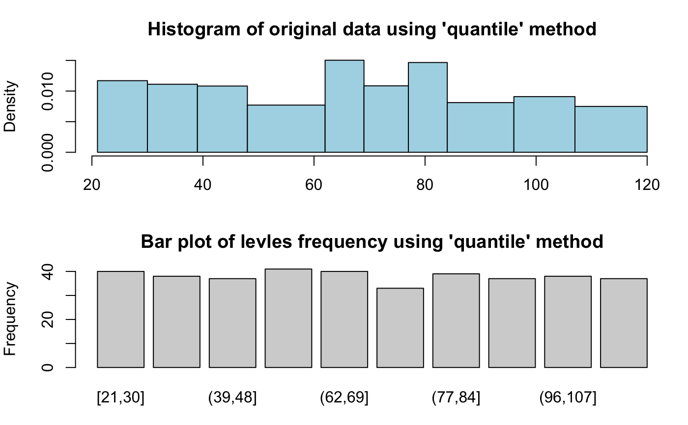
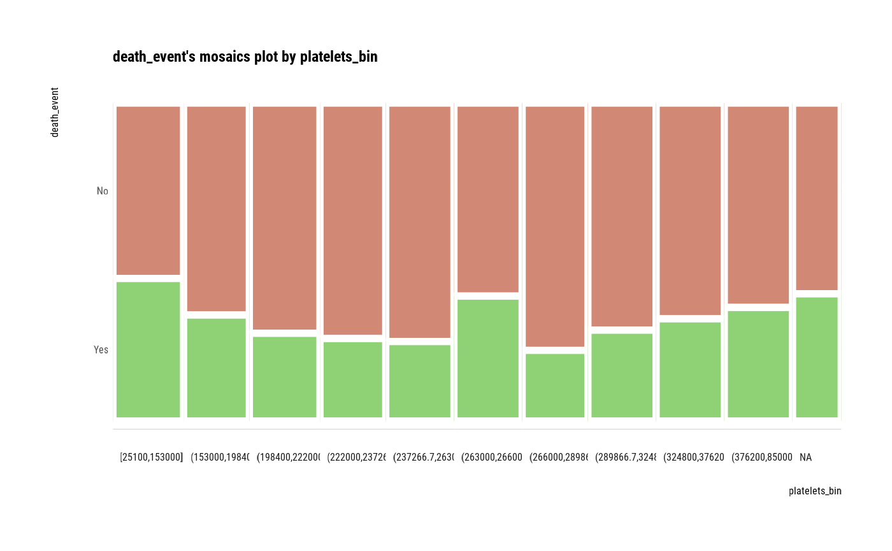

The binning() converts a numeric variable to a categorization variable.
binning( x, nbins, type = c("quantile", "equal", "pretty", "kmeans", "bclust"), ordered = TRUE, labels = NULL, approxy.lab = TRUE )
| x | numeric. numeric vector for binning. |
|---|---|
| nbins | integer. number of intervals(bins). required. if missing, nclass.Sturges is used. |
| type | character. binning method. Choose from "quantile", "equal", "pretty", "kmeans" and "bclust". The "quantile" sets breaks with quantiles of the same interval. The "equal" sets breaks at the same interval. The "pretty" chooses a number of breaks not necessarily equal to nbins using base::pretty function. The "kmeans" uses stats::kmeans function to generate the breaks. The "bclust" uses e1071::bclust function to generate the breaks using bagged clustering. "kmeans" and "bclust" was implemented by classInt::classIntervals() function. |
| ordered | logical. whether to build an ordered factor or not. |
| labels | character. the label names to use for each of the bins. |
| approxy.lab | logical. If TRUE, large number breaks are approximated to pretty numbers. If FALSE, the original breaks obtained by type are used. |
An object of bins class. Attributes of bins class is as follows.
class : "bins"
type : binning type, "quantile", "equal", "pretty", "kmeans", "bclust".
breaks : breaks for binning. the number of intervals into which x is to be cut.
levels : levels of binned value.
raw : raw data, numeric vector corresponding to x argument.
This function is useful when used with the mutate/transmute function of the dplyr package.
See vignette("transformation") for an introduction to these concepts.
# \donttest{ # Generate data for the example heartfailure2 <- heartfailure heartfailure2[sample(seq(NROW(heartfailure2)), 20), "platelets"] <- NA # Binning the platelets variable. default type argument is "quantile" bin <- binning(heartfailure2$platelets) # Print bins class object bin#> binned type: quantile #> number of bins: 10 #> x #> [25100,151533.3] (151533.3,196000] (196000,221000] (221000,236066.7] #> 28 29 29 26 #> (236066.7,260000] (260000,265000] (265000,283000] (283000,319000] #> 28 29 27 28 #> (319000,376200] (376200,850000] <NA> #> 27 28 20#> levels freq rate #> 1 [25100,151533.3] 28 0.09364548 #> 2 (151533.3,196000] 29 0.09698997 #> 3 (196000,221000] 29 0.09698997 #> 4 (221000,236066.7] 26 0.08695652 #> 5 (236066.7,260000] 28 0.09364548 #> 6 (260000,265000] 29 0.09698997 #> 7 (265000,283000] 27 0.09030100 #> 8 (283000,319000] 28 0.09364548 #> 9 (319000,376200] 27 0.09030100 #> 10 (376200,850000] 28 0.09364548 #> 11 <NA> 20 0.06688963# Using labels argument bin <- binning(heartfailure2$platelets, nbins = 4, labels = c("LQ1", "UQ1", "LQ3", "UQ3")) bin#> binned type: quantile #> number of bins: 4 #> x #> LQ1 UQ1 LQ3 UQ3 <NA> #> 70 70 70 69 20# Using another type argument bin <- binning(heartfailure2$platelets, nbins = 5, type = "equal") bin#> binned type: equal #> number of bins: 5 #> x #> [25100,190080] (190080,355060] (355060,520040] (520040,685020] (685020,850000] #> 51 191 32 3 2 #> <NA> #> 20bin <- binning(heartfailure2$platelets, nbins = 5, type = "pretty") bin#> binned type: pretty #> number of bins: 5 #> x #> [0,2e+05] (2e+05,4e+05] (4e+05,6e+05] (6e+05,8e+05] (8e+05,1e+06] #> 59 202 15 2 1 #> <NA> #> 20bin <- binning(heartfailure2$platelets, nbins = 5, type = "kmeans") bin#> binned type: kmeans #> number of bins: 5 #> x #> [25100,187000] (187000,269000] (269000,355500] (355500,582000] (582000,850000] #> 47 127 68 34 3 #> <NA> #> 20bin <- binning(heartfailure2$platelets, nbins = 5, type = "bclust") bin#> binned type: bclust #> number of bins: 5 #> x #> [25100,182500] (182500,457500] (457500,681500] (681500,796000] (796000,850000] #> 44 226 7 1 1 #> <NA> #> 20#> binned type: quantile #> number of bins: 7 #> x #> [3.45679e+08,2.432687e+09] (2.432687e+09,3.783069e+09] #> 7 7 #> (3.783069e+09,4.983539e+09] (4.983539e+09,7.582598e+09] #> 7 8 #> (7.582598e+09,8.779541e+09] (8.779541e+09,1.062963e+10] #> 7 7 #> (1.062963e+10,1.212346e+10] #> 7bin <- binning(x, approxy.lab = FALSE) bin#> binned type: quantile #> number of bins: 7 #> x #> [345679012,2432686652] (2432686652,3783068779] (3783068779,4983539090] #> 7 7 7 #> (4983539090,7582598464] (7582598464,8779541437] (8779541437,10629629619] #> 8 7 7 #> (10629629619,12123456778] #> 7#> [1] (2432686652,3783068779] (8779541437,10629629619] #> [3] (4983539090,7582598464] (2432686652,3783068779] #> [5] (2432686652,3783068779] (4983539090,7582598464] #> [7] [345679012,2432686652] (3783068779,4983539090] #> [9] (4983539090,7582598464] (3783068779,4983539090] #> [11] (10629629619,12123456778] (2432686652,3783068779] #> [13] (10629629619,12123456778] (10629629619,12123456778] #> [15] (4983539090,7582598464] (3783068779,4983539090] #> [17] (8779541437,10629629619] [345679012,2432686652] #> [19] (7582598464,8779541437] (4983539090,7582598464] #> [21] (4983539090,7582598464] (3783068779,4983539090] #> [23] (7582598464,8779541437] (4983539090,7582598464] #> [25] (2432686652,3783068779] (8779541437,10629629619] #> [27] (10629629619,12123456778] [345679012,2432686652] #> [29] (7582598464,8779541437] [345679012,2432686652] #> [31] (10629629619,12123456778] (7582598464,8779541437] #> [33] (4983539090,7582598464] (2432686652,3783068779] #> [35] (7582598464,8779541437] (7582598464,8779541437] #> [37] (7582598464,8779541437] (10629629619,12123456778] #> [39] [345679012,2432686652] (8779541437,10629629619] #> [41] (8779541437,10629629619] [345679012,2432686652] #> [43] (8779541437,10629629619] (2432686652,3783068779] #> [45] (10629629619,12123456778] (3783068779,4983539090] #> [47] (8779541437,10629629619] (3783068779,4983539090] #> [49] [345679012,2432686652] (3783068779,4983539090] #> 7 Levels: [345679012,2432686652] < ... < (10629629619,12123456778]#> #>#> #> #>#> #> #># Compare binned frequency by death_event heartfailure2 %>% mutate(platelets_bin = binning(heartfailure2$platelets) %>% extract()) %>% group_by(death_event, platelets_bin) %>% summarise(freq = n()) %>% arrange(desc(freq)) %>% head(10)#>#> # A tibble: 10 x 3 #> # Groups: death_event [1] #> death_event platelets_bin freq #> <fct> <ord> <int> #> 1 No (265000,283000] 23 #> 2 No (236066.7,260000] 22 #> 3 No (221000,236066.7] 20 #> 4 No (196000,221000] 19 #> 5 No (283000,319000] 19 #> 6 No (151533.3,196000] 18 #> 7 No (319000,376200] 18 #> 8 No (376200,850000] 18 #> 9 No [25100,151533.3] 16 #> 10 No (260000,265000] 16# Compare binned frequency by death_event using Viz heartfailure2 %>% mutate(platelets_bin = binning(heartfailure2$platelets) %>% extract()) %>% target_by(death_event) %>% relate(platelets_bin) %>% plot()# }